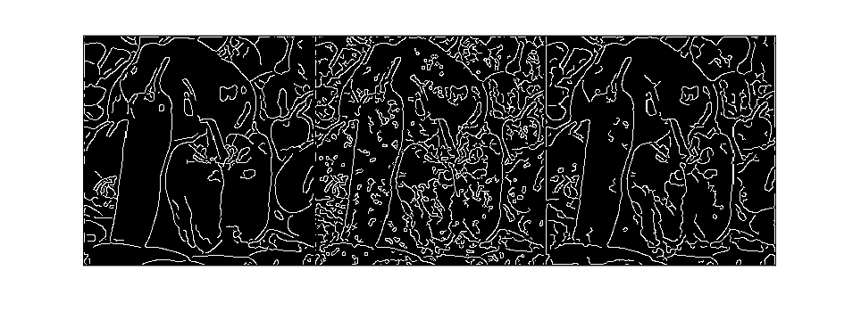

Contents
leo imagen de entrada
close all, clear all;
name = 'peppers';
I = imread(strcat('../Senales/256x256/', name, '.pgm'));
figure,imshow(I),title('Imagen original');
agrego ruido
tipo_de_ruido = 'salt&pepper';
if strcmp(tipo_de_ruido,'salt&pepper')
IR = imnoise(I,'salt & pepper');
elseif strcmp(tipo_de_ruido,'uniforme')
sr = 64;
IR = double(I) + randi([-sr,sr], size(I));
IR = uint8(IR);
elseif strcmp(tipo_de_ruido, 'gaussiano')
IR = imnoise(I,'gaussian');
[p,m] = psnr(I(2:end-1,2:end-1), IR(2:end-1,2:end-1));
elseif strcmp(tipo_de_ruido, 'speckle')
IR = imnoise(I,'speckle');
[p,m] = psnr(I(2:end-1,2:end-1), IR(2:end-1,2:end-1));
else
IR = zeros(size(I));
end
[p,m] = psnr(I(2:end-1,2:end-1), IR(2:end-1,2:end-1));
imwrite(IR,strcat('../Resultados/', name, '-', tipo_de_ruido, '.png'))
figure,imshow(IR),title(['Imagen ruidosa']);
dif = double(I)-double(IR);
minimum = min(min(dif));
dif = dif - minimum;
maximum = max(max(dif));
dif = dif ./ maximum;
dif = uint8(dif*255);
imwrite(dif,strcat('../Resultados/', name, '-', tipo_de_ruido, '-dif.png'))
figure,imshow(dif),title(['Diferencia']);
Armado del sistema
Lambda = 1;
Dim = size(IR);
NInc = prod(Dim);
Utilde = Lambda*double(IR(:));
B = -1*ones(NInc,5);
B(:,3) = (Lambda+4)*ones(NInc,1);
d = [-Dim(1) -1 0 1 Dim(1)];
A = spdiags(B,d,NInc,NInc);
Resolucion del sistema
Usol = A\Utilde;
L = chol(A,'lower');
Usol = L'\(L\Utilde);
Usol = Usol - min(Usol);
Usol = Usol / max(Usol);
Usol = uint8(Usol*255);
IFS = reshape(Usol,Dim);
figure,imshow([I,IR,IFS]),title(['Imagen filtrada, lambda=' num2str(Lambda)]);
imwrite(IFS,strcat('../Resultados/', name, '-out-', tipo_de_ruido, '.png'))
calculo psnr
[p,m] = psnr(I(2:end-1,2:end-1), IR(2:end-1,2:end-1));
fprintf('Calidad imagen ruidosa.\n');
fprintf('PSNR=%g, ECM=%g\n',p,m);
[p,m] = psnr(I(2:end-1,2:end-1), IFS(2:end-1,2:end-1));
fprintf('Calidad imagen filtrada.\n');
fprintf('PSNR=%g, ECM=%g\n',p,m);
Calidad imagen ruidosa.
PSNR=18.1934, ECM=985.68
Calidad imagen filtrada.
PSNR=22.2253, ECM=389.543
De yapa
figure;
S1 = edge(I,'canny');
S2 = edge(IR,'canny');
S3 = edge(IFS,'canny');
imshow([S1,S2,S3]);
